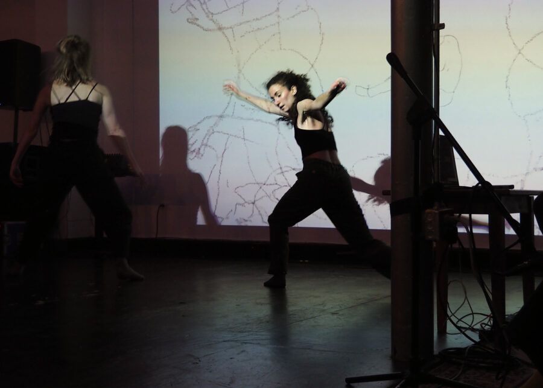

CLEAT Series: Lia Kohl, Big Pal / The Little Streams / Stephan Moore
At our first CLEAT Series of 2026 welcome solo cello/electronics artist Lia Kohl to the system for the first time, along with the return of Big Pal in collaboration with The Little Streams and series curator Stephan Moore.
We’re excited for this first time collaboration between the experimental pop band Big Pal, dance company The Little Streams, and electronic improviser Stephan Moore, who are creating multichannel and multimedia piece featuring choreography and music sequenced by card game mechanics.
Lia Kohl is no stranger to Elastic Arts, but we’re excited for her to finally bring her special blend of abstract electronics, cello, and voice to the 16 channel CLEAT system.
We’ll get started at 8pm. $15 / $10 w/ Student ID – Tickets Available at the Door
Big Pal https://bigpal.bandcamp.com/album/high-energy-news-music
The Little Streams https://www.emilybcraver.com/
Stephan Moore https://oddnoise.com